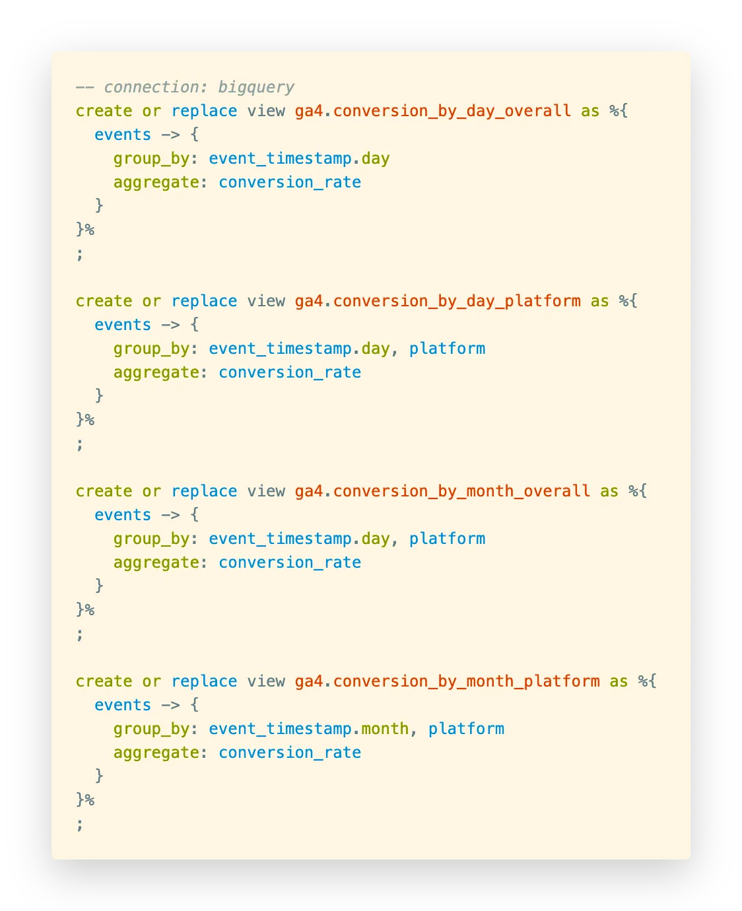
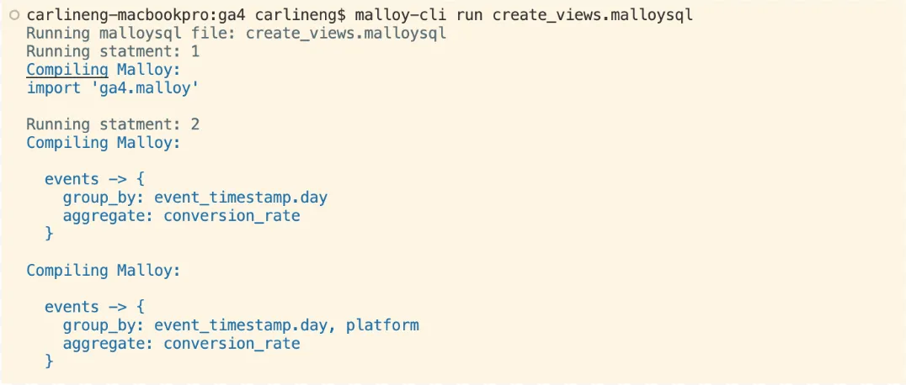

All Posts
All Posts
Lightweight, powerful, concise data transformation
August 25, 2023 by lloyd tabb and Carlin Eng
Today we’re excited to announce the launch of the Malloy Command Line Interface (CLI). One of the primary jobs of SQL is transforming datasets. The most basic way to do this is by issuing SQL queries on a command line. The Malloy CLI serves this function, but offers simplicity and reusability in calculations that SQL lacks. With Malloy, metric calculations can be saved as part of a data model and reused in queries that calculate roll-ups at varying levels of granularity or slice across different dimensions. This reduces duplicate code, making data pipelines much easier to read, understand, and maintain.
Let’s take a look at a simple example. The Google Analytics 4 (GA4) schema is notoriously difficult to query. The schema contains 23 columns, 11 of which are “record” types with nested data. Three of those record columns contain further nested types. Some of these nested types contain columns named “key” and “value”, so the schema can’t be inferred without actually querying the data:

This data needs to be transformed before it is usable by normal people. The Malloy model we define below does all this toilsome work; for example, transforming the timestamp data from microseconds to an actual timestamp data type, or wrangling session IDs from the unhelpfully named event_params column:
Isn’t the same thing achievable with SQL views? We could certainly write the same transformation logic to unpack event_params with SQL, but things get more interesting when we start aggregating the data. Suppose we want to compute the conversion rate as the count of users who made a purchase divided by all users. In the model above, the logic for this metric is encapsulated into a named measure called conversion_rate. The business wants to see conversion rates sliced by different dimensions: date, month, and platform. In SQL, to generate each of these slices, the aggregation logic for conversion_rate would need to be duplicated for each view:
With Malloy, we can simply reference the named measure with each query. There’s a single place to define the measure, and that measure can be used to calculate roll-ups across any arbitrary set of dimensions. We can embed these queries inside of SQL DDL statements in a script:
Now we use the Malloy CLI to execute this script and create the views inside of our database:
The Malloy code is much more concise, readable, and maintainable. If the definition of conversion_rate changes, it only needs to be updated in a single place: the events model. Contrast this with the SQL equivalent. The code is verbose, and any change to the underlying business logic requires an update to every single CREATE VIEW statement.
The Malloy CLI is relatively simple in its functionality today, but it still unlocks the power of Malloy for many users. We’ll be looking to build more advanced functionality into this tool to make it even more useful. Getting started is easy – head over to Github Releases to grab the latest binary for your platform, and check out our documentation for detailed usage information. If you have any feedback or feature requests, don’t hesitate to join our community Slack channel and drop us a note.